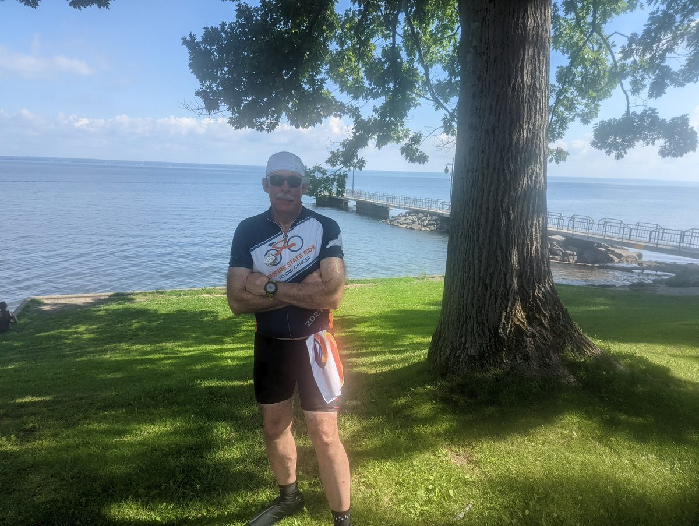

Day 6 · Spencerport, New York · 500 miles in
Staten Island to Niagara Falls · Four Rides & Counting
The Ride Was Never About the Ride
In 2021, a friend — a far better cyclist than I was — encouraged me to sign up for the Empire State Ride. Five hundred and sixty miles from Staten Island to Niagara Falls, seven days, in the heat of July. I could not get my head around it.
For months I trained: long hours on the indoor trainer through the winter, longer rides outside as the weather opened. I will admit it plainly — there were moments I genuinely wondered whether I would survive the week.